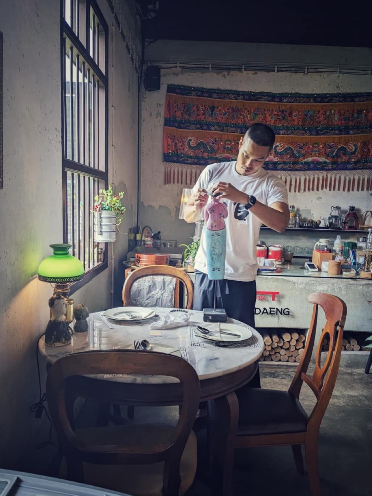

2566 · กิจการ · บันทึกย่อย
ตุ๊กตาอาหมวยประจำบ้านอาจ้อแตกและซ่อมใหม่อีกครั้ง

เป็นตุ๊กตาบ้านอาจ้อ ต้องอดทน 🥹
ตุ๊กตาอาหมวยนี้ มาอยู่ตั้งแต่บ้านอาจ้อเปิดบ้าน ช่วงแรกอยู่ในบ้านหน้ารูปอาจ้อ ยืนรับแดดรับลมทุกวันจนหลังเปลี่ยนสี 😅 พอผ่านฤดูร้อนเข้าฤดูฝน วันดีคืนดี เจอฝนสาดตั้งฉากทะลุหน้าต่าง เปียกปอน พื้นน้ำท่วม เลยย้ายมาอยู่โต๊ะแดง ยืนยิ้มโบกพัดต้อนรับลูกค้าในห้องน้ำอยู่พักใหญ่ วันนึงน้องที่ร้านโทรมาบอก ตุ๊กตา #เปเลงก้าว หัวไปทาง ตัวไปทาง ฐานอยู่ที่เดิม โชคดีชิ้นส่วนยังอยู่ครบ จับประกอบร่างใหม่ด้วยกาวร้อน ยืนต้อนรับต่อได้อีก 1 season
มาวันนี้ แตกกระจายกันอีกรอบ แต่เดชะบุญยังรวมร่างได้อีกครั้ง มากประสบการณ์ แตกตั้งแต่ ร้าวผ่านนมมาถึงข้างล่าง แต่ยังยืนไหวน้า 🥰
ตอนนี้พร้อมยืนรับลูกค้าอีกรอบ ลูกค้ามาใช้บริการ เปิดประตูห้องน้ำแล้วเดินระวังน้องตุ๊กตาด้วยน้า แตกอีกรอบหน้าจะไม่ไหวแร้ว 😅😅😅
#ขอบคุณที่สู้กันมา 🥰
#พังแล้วก็กลับมาใหม่ได้ 💪🔥
#บ้านอาจ้อ 💕